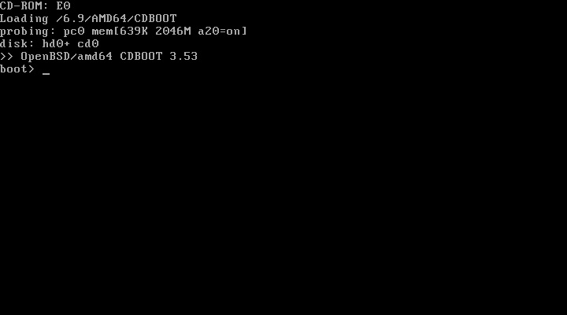
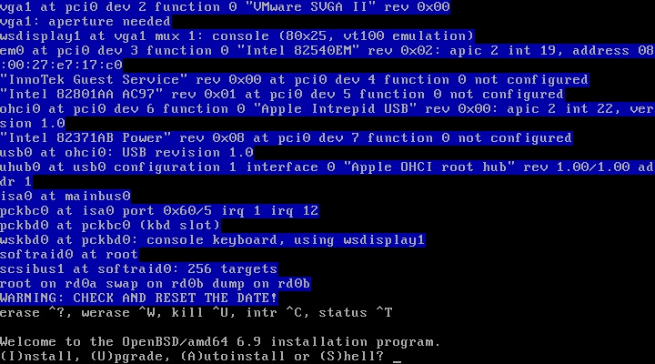
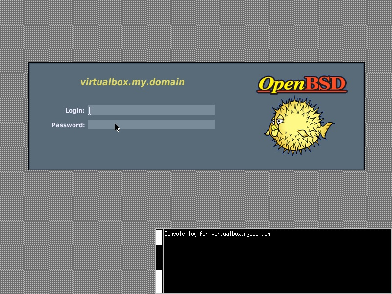
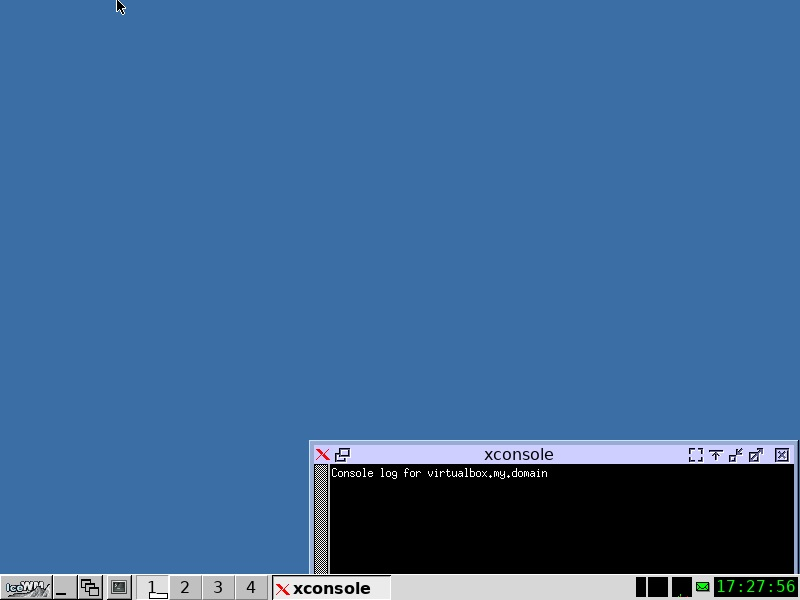

Instalação do OpenBSD
Introdução
O OpenBSD é um sistema operacional unixlike com foco em segurança, livre e de código aberto e baseado em BSD. Criado em '95 como fork do NetBSD por Theo de Raadt. Essa instalação alvo é para uma máquina de testes para quem quer iniciar os estudos em OpenBSD, com nano, gerenciador de login padrão da distro, IceWM para um mínimo de usabilidade, Firefox e um gerenciador de arquivos gráfico.
AVISO: NÃO RECOMENDO A INSTALAÇÃO DO OPENBSD EM MODO UEFI E MUITO MENOS PARA USUÁRIOS INICIANTES
Nessa tela apenas aguarde o carregamento dos arquivos

Essa é a tela de início da instalação, como não existe contexto ou interface o tutorial segue sem demais capturas de tela

Welcome to the OpenBSD/amd64 6.9 installation program.
(I)nstall, (U)pgrade, (A)utoinstall or (S)hell?
> i
Choose your keyboard layout ('?' or 'L' for list)
> br
System hostname? (short form, e.g. 'foo')
> seuhostname
Available network interfaces are: (interfaces)
Which network interface do you wish to configure? (or 'done') [em0]
> tecle Enter se a sua interface estiver dentro de [] ou digite a interface e tecle Enter
IPv4 address for em0? (or 'dhcp' or 'none') [dhcp]
> tecle Enter para configurar IPv4 com dhcp ou caso queira um ip específico insira o ip desejado e tecle Enter
IPv6 address for em0? (or 'autoconf' or 'none') [none]
> tecle Enter para utilizar somente IPv4, autoconf para configuração automática de IPv6 ou insira o ip desejável/comprimento de prefixo para a interface
Which network interface do you wish to configure? (or 'done') [done]
> tecle Enter para finalizar
DNS domain name? (e.g. 'example.com') [my.domain]
> tecle Enter caso não tenha a necessidade de configurar um DNS domain name (computador pessoal) ou insira o domain name
Password for root account? (will not echo)
> insira a senha de administrador e tecle enter
Password for root account? (again)
> insira novamente a senha de administrador
Start sshd(8) by default? [yes]
> no (computador pessoal) a menos que você queira ter a possibilidade de se conectar a essa máquina via ssh, nesse caso apenas tecle Enter
Do you expect to run the X Window System? [yes]
> tecle Enter caso queira utilizar uma interface ou digite no caso queira utilizar a máquina apenas por console
Do you want the X Window System to be started by xenodm(1)? [no]
> yes
Setup a user? (enter a lower-case loginname, or 'no') [no]
> insira o nome que você deseja para o seu usuário padrão ou tecle Enter para utilizar na conta de administrador (não recomendado)
Full name for user seuuser? [seuuser]
> tecle Enter
Password for user seuuser? (will not echo)
> Insira sua senha de usuário e tecle enter
Password for user seuuser? (again)
> Insira sua senha de usuário novamente
What zimezone are you in? ('?' for list) [America/Sao_Paulo]
> tecle Enter se a região estiver correta, '?' e depois digite a região e depois subregião caso queira mudar
Available disks are: wd0
Which disk is the root disk? ('?' for details) [wd0]
> '?' mostra detalhes dos discos disponíveis, escreva o disco que deseja instalar ou tecle enter caso este [wd0] seja o disco correto
No valid MBR GPT.
Use (W)hole disk MBR, whole disk (G)PT, (O)penBSD area or (E)dit? [OpenBSD]
> recomendo teclar Enter ou 'w' para usar todo o disco em MBR, ou você pode editar as partições com a opção 'e'
Use (A)uto layout, (E)dit auto layout, or create (C)ustom layout? [a]
> tecle Enter ou 'a' para utilizar o layout padrão, ou 'e' caso deseje editar manualmente
Let's install the sets!
Location of sets? (cd0 disk http nfs or 'done') [cd0]
> se o dispositivo de instalação estiver correto ([cd0] no caso dessa instalação) tecle Enter
Pathname to the sets? (or 'done') [6.9/amd64]
> se reconheceu o sistema correto em [] tecle Enter
Select sets by entering a set name, a file name pattern or 'all'. De-select sets by prepending a '-', e.g.: '-game'. Selected sets are labelled '[X]'.
Set name(s)? (or 'abort' or 'done') [done]
> -game*, não precisaremos de jogos dessa máquina, se game.tgz for desmarcado tecle Enter
Directory does not contain SHA256.sig. Continue without verification? [no]
> yes
Location of sets? (cd0 disk http nfs or 'done') [done]
> tecle Enter
Time appears wrong. Set to ''? [yes]
> se a data entre parênteses estiver correta tecle Enter
CONGRATULATIONS! Your OpenBSD install has been successfully completed!
Exit to (S)hell, (H)alt or (R)eboot? [reboot]
> 'h' para desligar e 'r' para reiniciar
The operating system has halted.
Please press any key to reboot.
> tecle Enter
Pós-Instalação
Assim que o sistema iniciar ele vai carregar um gerenciador de login bem básico

Por questões de segurança manteremos esse gerenciador de login mesmo, para alternar para um terminal e começar a configurar o básico do sistema você pode usar Ctrl+Alt+F1. Logue como root e dê o comando pkg_add -u para atualizar os pacotes do sistema
agora vamos instalar um editor de texto via console para alterar as configurações, um gerenciador de janelas, um navegador e um gerenciador de arquivos com pkg_add nano icewm firefox thunar (ou pcmanfm ou qualquer outro gerenciador de arquivos que você deseje)
com Ctrl+Alt+F2 logue no seu usuário padrão e crie um arquivo .xsession (nano .xsession) contendo exec icewm-session, retorne para o tty5 com Ctrl+Alt+F5 e tente iniciar uma sessão no IceWM com o seu usuário, se tudo deu certo você verá essa tela
